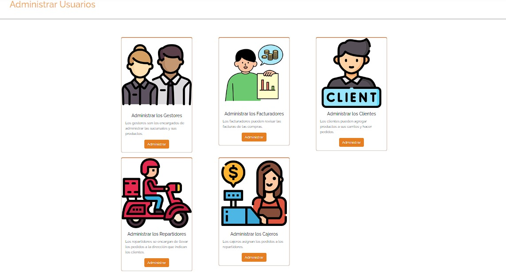
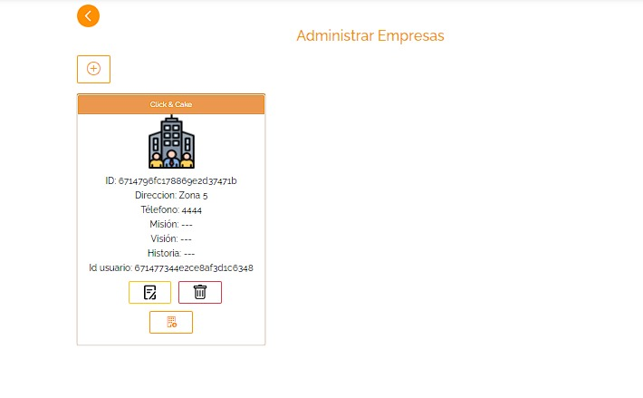
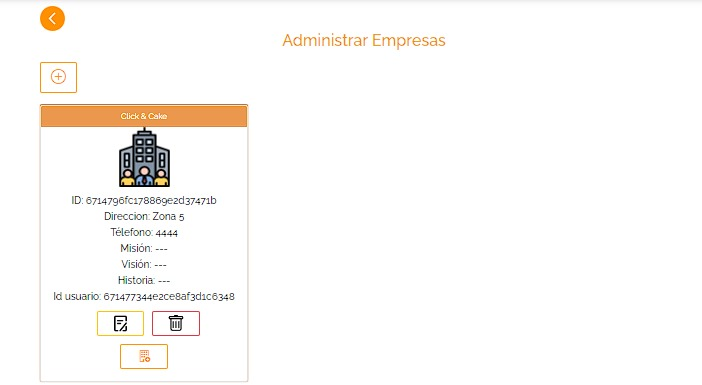
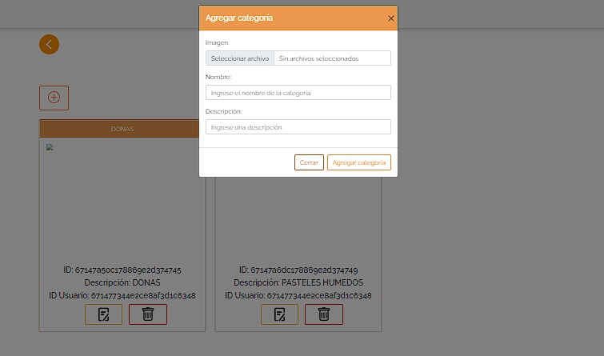
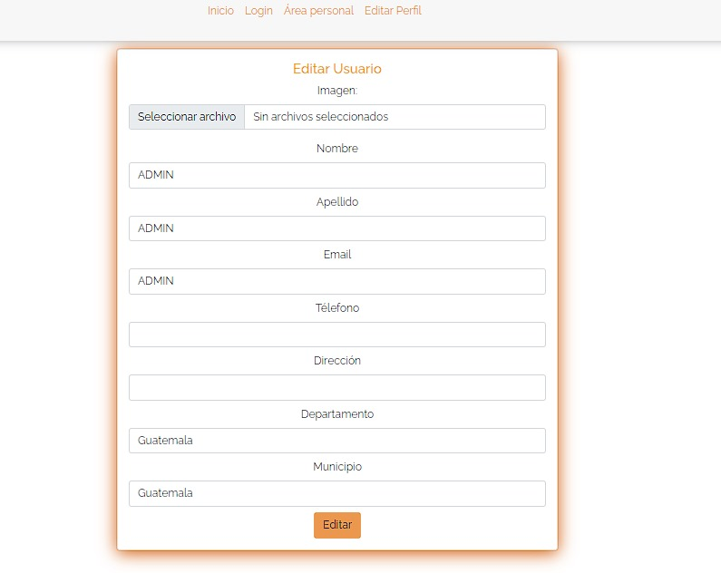
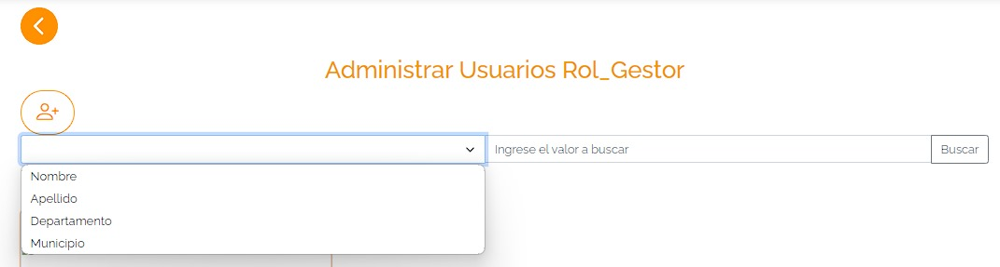

1. Agregar usuarios
El administrador puede agregar los diferentes roles que existen en la empresa.
2. Agregar empresas
El administrador puede agregar las empresas en cada punto del país.
3. Agregar sucursales a la empresa
El administrador puede agregar sucursales a la empresa creada anteriormente, en esta se selecciona la ubicacion y el municipio dónde estará ubicada.
4. Agregar categorías
El administrador puede agregar todas las categorias que estan disponibles en nuestra empresa, sin embargo al administrador no puede agregar productos, esta acción unicamente la puede hacer el gestor.

5. Edición de perfil
El administrador puede editar su perfil, unicamente campos permitidos.

6. Barra de busqueda
La barra de busqueda conforma diferentes busquedas, en ella se puede buscar un usuario por municipio, departamento, nombre y apellido.
